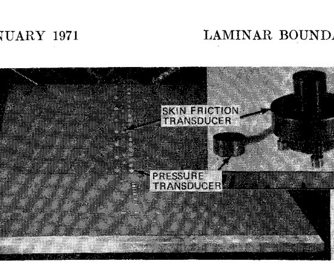
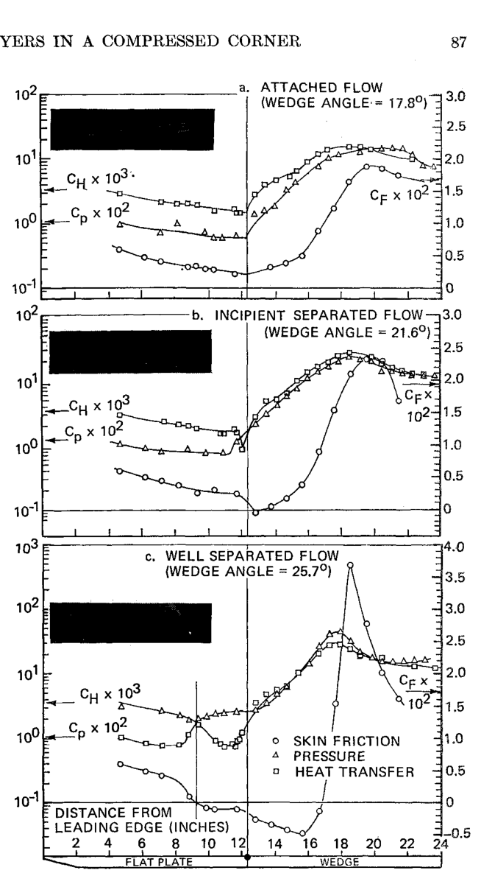
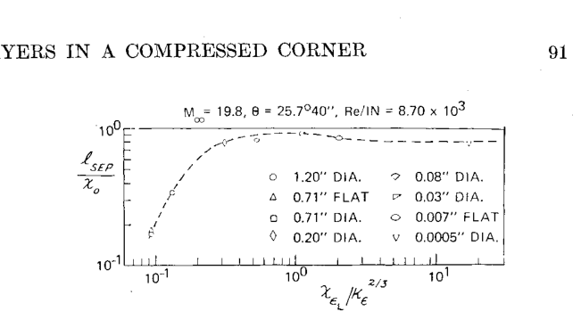
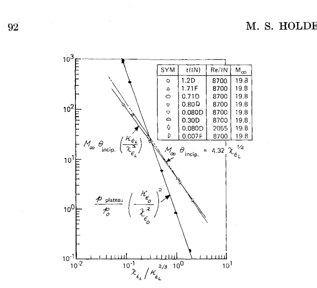

01中文摘要
在激波风洞中对平板-楔压缩面的附着与分离层流流动测量热流、压力、摩阻和纹影，来流马赫数14～20、单位雷诺数2000～14000/in，平板粘性干扰参数χ_L约1～30。结果表明层流分离区长度随雷诺数增大而增大、随马赫数增大而减小；给出起始分离楔角和充分分离平台压力按M∞与χ_e的关联。还考察前缘钝化与边界层位移的联合作用，参数χ_e/κ_e^(2/3)覆盖10～0.08；轻度钝化略增大分离区，而χ_e/κ_e^(2/3)<0.7后继续钝化使分离区减小。用2 ft展长模型中心线近似二维，并讨论侧板与展长影响。
02阅读说明
实验研究（AIAA Journal 9(1):84–93, 1971，Part II）。材料为10页期刊全文，含Fig. 1–13；两栏OCR有个别串行与符号损坏（nomenclature、部分公式与图内标注尤甚），正文与图注主体可读。已用PDF第2–3、5–6、8–9页核对试验矩阵、相关式与钝度参数。页码按bundle的PDF页给出，括注刊页。信息完整度较高，但壁温、湍流度、测量不确定度的完整预算等未系统给出。 文章类型：期刊
03一句话核心与三句话摘要
高超声速平板-楔实验：层流分离区随Re增大、Ma减小而增大；强钝前缘使分离区显著缩短。
- 钝前缘与边界层排移联合作用、从排移主导到钝度主导的压缩拐角层流分离，此前缺乏系统实验，Townsend与Gray关于钝度影响的结论还相互矛盾。 AI概括
- 在CAL 4-ft与6-ft激波风洞中测量M14–20、Re/in 2000–14000的平板-楔模型，得到起始分离相关式M∞θ_incip=4.32χ_L^{1/2}，并观察到分离区长度随Re增大、Ma减小而增大。 原文明确
- 钝度影响非单调：χ_e/Λ_e^{2/3}>0.5时小钝度略增分离区，<0.5时分离区随钝度迅速缩短；平台压力随钝度下降，设计需在防热与压力恢复间折中。 AI概括
04核心内容清单
| 要点 | 类型 | 重要性 | 原文依据 | 属性 |
|---|---|---|---|---|
| 在CAL 4-ft/6-ft激波风洞中测量平板-楔模型，覆盖M14–20、Re/in 2000–14000，跨越弱到强黏性干扰。 | 方法/工况 | A | 第1—2页 | 原文明确 |
| 分离流建立明显慢于附着流：附着流在启动时间内稳定，分离流约需2 ms、最长2.0 ms。 | 定量结果 | A | 第2—3、9页；Fig. 2 | 原文明确 |
| 2 ft展宽、无侧挡板时中心线流动可视为二维；给1-ft模型加侧挡板会增大最大分离区，给1.5/2-ft模型加则无可测影响。 | 实验方法/结果 | B | 第3页 | 原文明确 |
| 尖平板附着流中楔对铰链上游几乎无影响，上游影响极小；一旦分离，干扰随楔角迅速前传。 | 现象 | A | 第3—5、9页；Fig. 4 | 原文明确 |
| 强分离流存在平台压力区；分离发生在平台压力上升的0.6处，再附约在再附压力上升的0.6处，平台区热流约为当地平板值的一半。 | 定量结果 | A | 第4、8页；Fig. 4c | 原文明确 |
| 层流分离区长度随Re增大、Ma减小而增大；增大Ma、降低Re均抑制分离。 | 趋势 | A | 第1页摘要、第5页 | 原文明确 |
| 尖平板起始分离相关式M∞θ_incip=4.32χ_L^{1/2}，θ_incip估计不确定度±5%；平台压力随Ma增大、Re减小而升高并按χ_e相关。 | 定量相关 | A | 第5、9页；Figs. 5–6 | 原文明确 |
| 钝度影响非单调：χ_e/Λ_e^{2/3}>0.5时小到中等钝度略增分离区，<0.5时钝度增大使分离区迅速缩短。 | 定量结果 | A | 第1页摘要、第8页；Fig. 12 | 原文明确 |
| 平台压力随钝度增大而下降，并按(pp/p0)(χ_e0/x_e0²)²对χ_e0/Λ_e0^{2/3}相关；1.2 in圆柱与0.71 in平头（鼻部阻力相同）平台压力几乎相同。 | 定量相关 | A | 第8页；Fig. 13 | 原文明确 |
| 0.71 in平头前缘把起始分离角降至约17.8°，再增8°仅形成约2 in分离区；楔面Cf/热流/压力与平板同量级且无明确平台，压力上升归因于非均匀流压缩。 | 定量结果/机制 | A | 第8页；Fig. 11 | 原文明确 |
| 强钝度下压力拐点法几乎无法判定起始分离，摩阻测量是唯一可靠方法。 | 方法结论 | A | 第9页 | 原文明确 |
| 钝度通过降低边缘Ma（促进分离）、降低局部Re与增强顺压梯度（抑制分离）三种竞争效应起作用；净效应随钝度区间改变。 | 机制 | B | 第6、8页 | 原文明确 |
05引言：研究问题与领域缺口
【研究问题】高超声速压缩拐角中，层流边界层的分离、再附与压力恢复受边界层排移（黏性干扰）和前缘钝度共同控制；工程上为控制前缘加热必须引入钝度，但钝度如何改变分离起始与分离区尺度尚不清楚（第1页）。【领域缺口】作者指出，早期Bogdonoff & Vas、Sterrett & Emery、Chapman/Kuehn/Larson等已确认层流易分离，但多数高超声速研究中小平板上的干扰压力梯度很小，无人考察拐角上游压力梯度的影响；钝度方面只有Townsend（2D）与Gray（轴对称）的有限数据，前者发现钝度增大使分离区缩短，后者发现相反趋势；尚无研究覆盖“排移主导—钝度主导”的完整区间（第1页）。【目标】1）在尖平板-楔模型上，用M14–20、Re/in 2000–14000跨越弱到强干扰（1<χ_L<30），建立起始分离角与平台压力的相关式；2）用五种圆柱前缘和两种方形前缘，在M19.8、Re/in 8700与2055下考察钝度与排移联合作用，覆盖0.08<χ_e/Λ_e^{2/3}<2（第1—2、9页）。【假设】起始分离定义为干扰区内仅一点Cf=0；作者假定Cf=0、x=L、θ=θ_incip时可沿用Cheng的黏性高超声速相似律（第9页）。
06流动条件与几何构型
| 项目 | 数值/描述 | 依据 | 备注 |
|---|---|---|---|
| 风洞（尖平板系列） | CAL 4-ft激波风洞，tailored interface，有效运行时间5 ms | 第2页 | |
| 风洞（M16与M19.8系列） | CAL 6-ft激波风洞，tailored interface，有效运行时间4 ms | 第2页 | |
| 尖平板工况1 | M=14.8，Re/in=14,400，T0=2900 K，储室压3900 psia（4-ft） | 第2页 | |
| 尖平板工况2 | M=14.4，Re/in=5,500，T0=2900 K，储室压1400 psia（4-ft） | 第2页 | |
| 尖平板工况3 | M=13.6，Re/in=2,200，T0=2900 K，储室压500 psia（4-ft） | 第2页 | |
| 尖平板工况4 | M=16，Re/in=2,500，T0=6000 K（原文如此，疑为°R），储室压3000 psia（6-ft） | 第2页 | 温度单位按原文照录 |
| 尖平板工况5 | M=19.8，Re/in=8,700，T0=5000 K（原文如此），储室压12,000 psia（6-ft） | 第2页 | 温度单位按原文照录 |
| 钝度系列工况1 | M=19.8，Re/in=8,700，T0=5000 K，储室压12,000 psia（6-ft） | 第2页 | |
| 钝度系列工况2 | M=19.8，Re/in=2,055，T0=5000 K，储室压2,400 psia（6-ft） | 第2页 | |
| 总体范围 | M∞=14–20；单位Re=2,000–14,000/in；1<χ_L<30（摘要） | 第1页摘要 | |
| 模型几何 | 12×12 in平板+12 in长楔/襟翼，楔角0–40°可调；展宽1、1.5、2 ft | 第2页；Fig. 1 | |
| 前缘配置 | 五种圆柱前缘直径1.200、0.710、0.200、0.080、0.030 in；两种方形前缘宽0.710、0.007 in | 第2页 | |
| 侧向边界 | 三角形侧挡板，上缘沿剪切层顶；最终数据取2 ft展宽、无侧挡板 | 第2—3页 | |
| 壁面热条件 | 高度冷却壁面（定性）；具体Tw未在正文给出；图3/4标有Tw/T0=0.04–0.15（对应理论曲线，逐工况值需回原文核对） | 第4页；Figs. 3–4 | 不能把图内理论曲线标注直接当作全部试验壁温 |
| 流动维度与状态 | 二维平板-楔；层流边界层；空气 | 第1—3页 | |
| 有效试验时间与建立时间 | 4–5 ms；附着流<1 ms稳定，分离流约2 ms、最长2.0 ms | 第2—3、9页 |
07核心现象与关键参数
| 参数 | 定义 | 数值 | 关系/说明 | 依据 |
|---|---|---|---|---|
| 黏性干扰参数 χ_L | 原文nomenclature给出的基于参考长度的黏性干扰参数；OCR记号损坏，逐字定义受限于材料，无法确认 | 尖平板相关式以χ_L^{1/2}出现 | M∞θ_incip=4.32χ_L^{1/2} | 第1、9页；nomenclature |
| 起始分离角 θ_incip | 干扰区内仅一点Cf=0时的楔角；估计不确定度±5% | 随Ma增大、Re减小而增大；0.007 in平头前缘在M19.8下约21.7°（Fig. 8b），尖平板示例强分离为25.7°（Fig. 4c） | 第5、9页；Fig. 8 | |
| 尖平板起始分离相关式 | 由Cheng相似律与Cf=0条件整理 | M∞θ_incip=4.32χ_L^{1/2} | 第9页 | |
| 钝平板起始分离相关式 | 引入钝度-黏性干扰参数χ_e/Λ_e^{2/3}后的拟合 | M∞θ_incip(κ_L/χ_L^{3/2})=4.34(χ_e/Λ_e^{2/3})^{-7/5}（符号按刊页92辨认） | κ、Λ的完整定义受OCR影响，无法逐字确认 | 第9页（刊页92） |
| 钝度-黏性干扰参数 | χ_e/Λ_e^{2/3}；Λ_e具体定义受限于材料，无法确认 | 试验覆盖0.08<χ_e/Λ_e^{2/3}<2；分界约0.5 | 第1、8、9页；Fig. 12 | |
| 平台压力比 | p_plateau/p_0 | 随Ma增大、Re减小而升高；随钝度增大而下降 | 第5、8页；Figs. 6、13 | |
| 平台压力相关式 | (p_plateau/p_0)(χ_e0/x_e0²)² 对 χ_e0/Λ_e0^{2/3} | 文中Fig. 13给出相关；x_0为干扰起始距离 | 第8页；Fig. 13 | |
| 分离区长度 | 用摩阻测量确定；以分离起始距离归一化后对χ_e/Λ_e^{2/3}作图 | χ_e/Λ_e^{2/3}>0.5略增；<0.5迅速缩短；0.71 in平头在θ=25.8°时约2 in | 第8页；Figs. 11–12 | |
| 分离点压力判据 | 分离发生在平台压力上升的0.6处 | 0.6 Δp_plateau | 第4页 | |
| 再附点压力判据 | 再附约在再附压力上升的0.6处 | 0.6 Δp_reattachment | 第4页 | |
| 平台区热流 | 强分离平台区热流与当地平板值之比 | 约0.5 | 第8页 | |
| 摩阻传感器灵敏度 | PZT弯曲式摩阻天平，1/4 in膜片 | 标称20 V/psi | 第2页 |
08方法与数据
【设备】CAL 4-ft与6-ft激波风洞，均按tailored interface运行；4-ft有效运行时间5 ms，6-ft为4 ms（第2页）。【模型】12×12 in平板，后接12 in长、可调至40°的楔/襟翼；平板与楔均布置热流、摩阻、压力传感器；模型展向可加侧板，展宽1、1.5、2 ft；三角形侧挡板上缘沿剪切层顶（第2页，Fig. 1）。【测量】薄膜热流计（TiO2绝缘膜+模拟网络直接输出热流率）；孔式与齐平压力传感器；摩阻传感器为1/4 in直径膜片与PZT晶体弯曲机构，补偿法向压力、加速度与热效应，标称灵敏度20 V/psi；纹影用于观察黏性层外缘与分离/再附（第2页）。【试验矩阵】尖平板：4-ft风洞T0=2900 K、储室压3900/1400/500 psia，对应M14.8/Re 14,400、M14.4/5,500、M13.6/2,200；6-ft风洞M16、T0=6000 K、3000 psia、Re 2,500/in；M19.8、T0=5000 K、12,000 psia、Re 8,700/in（第2页）。钝度系列：6-ft风洞M19.8、T0=5000 K、12,000与2,400 psia，对应8,700与2,055/in；五种圆柱前缘直径1.200、0.710、0.200、0.080、0.030 in，两种方形前缘0.710与0.007 in（第2页）。【有限展宽】通过加宽模型与侧挡板，直到继续改变横向边界条件对中心线热流/压力/摩阻无可测影响，认为中心流动二维；全部数据取2 ft展宽、无侧挡板（第3页）。【起始分离判据】干扰区内仅一点Cf=0；并与压力拐点、热流由尖峰变圆凹的旧判据对照；θ_incip估计不确定度±5%（第5、9页）。【相关方法】用Cheng黏性高超声速相似律整理θ_incip与平台压力；尖平板用χ_L，钝平板用χ_e/Λ_e^{2/3}（第5、8—9页）。
| 项目 | 内容 | 依据 | 备注 |
|---|---|---|---|
| 实验类型 | 高超声速风洞实验（短时激波风洞），壁面压力/热流/摩阻+纹影 | 第1—3页 | |
| 风洞 | CAL 4-ft与6-ft激波风洞；tailored interface；运行时间5 ms与4 ms | 第2页 | |
| 模型 | 12×12 in平板+12 in可调楔；展宽1/1.5/2 ft；可换前缘与侧挡板 | 第2页；Fig. 1 | |
| 热流测量 | TiO2薄膜热流计+模拟网络直接输出热流率 | 第2页 | |
| 压力测量 | 孔式与齐平安装压力传感器 | 第2页 | |
| 摩阻测量 | 1/4 in膜片+PZT晶体弯曲机构，补偿法向压力/加速度/热效应；20 V/psi | 第2页 | |
| 流场显示 | 纹影；用于黏性层外缘、分离/再附；强钝度下熵层会遮蔽密度梯度 | 第2页 | |
| 二维性保证 | 逐次加宽/加侧挡板直至中心线分布无可测变化；最终2 ft、无挡板 | 第3页 | |
| 起始分离判据 | 干扰区仅一点Cf=0；与压力拐点、热流尖峰→圆凹判据对照；θ_incip不确定度±5% | 第5、9页 | |
| 相关分析 | Cheng黏性高超声速相似律；尖平板χ_L；钝平板χ_e/Λ_e^{2/3}；线性/幂律拟合 | 第5、8—9页 |
09核心推导与公式
本文为实验Part II，未重复Part I的完整理论推导；但作者用Cheng的黏性高超声速相似律，把起始分离定义为Cf=0的单点条件，从而把θ_incip写成相似参数的函数，并用实验数据拟合系数。
关键假设
- 层流边界层，二维平板-楔几何，固定γ、Pr与壁温比Tw/T0。
- 起始分离条件可定义为干扰区内仅一点Cf=0，即CF=0时x=L、θ=θ_incip。
- Cheng相似律适用于尖平板与钝平板-楔的壁面压力、摩阻、热流；钝度通过χ_e/Λ_e^{2/3}进入。
- 实验数据满足相似律变量的幂律/函数关系，可用最小二乘拟合系数。
推导过程
作者引用Cheng的零阶理论：边界层厚度、壁面压力、摩阻、热流可写成包含x/L、χ_e、M∞、κ_e、Tw/T0、γ、Pr的函数；对钝平板还引入钝度-黏性干扰参数χ_e/Λ_e^{2/3}（第6页）。原文函数式OCR串行严重，未逐项转录。
把起始分离定义为干扰区内仅一点Cf=0；在相似律中令CF=0、x=L、θ=θ_incip，从而得到只含相似参数的判据（第9页）。
尖平板κ_e=0，相似关系退化为单个组合参数的函数；令其为零可得M∞θ_incip∝χ_L^{1/2}。实验拟合系数为4.32（第9页）。
对钝平板，控制参数为M∞θ_incip(κ_L/χ_L^{3/2})、χ_e/Λ_e^{2/3}与κ_e/χ_e²；全部数据拟合得到含钝度参数的幂律相关式。指数-7/5与系数4.34按刊页92辨认，κ与Λ的逐字定义受OCR影响。
适用边界：推导是相似律+实验拟合，不是从守恒方程出发的严格解；依赖Cheng零阶理论、固定Tw/T0与γ/Pr，且限于层流、二维、附着/弱分离到中等分离；钝度相关式的κ、Λ定义与指数受OCR影响，需回原文核对；不能外推到转捩或强三维流动。
10结果：主要发现与关键证据
【非定常建立】附着流在风洞启动时间内（<1 ms）即稳定；分离流需更长时间，约在稳态气流开始后2 ms达到平衡，最长可达2.0 ms；分离区前缘以近壁当地声速向上游传播；机理是垂直于表面的流向平面内建立再循环，而非平行表面的侧向流出/回流（第2—3、9页，Fig. 2）。【有限展宽】展宽增至1.5–2 ft或加侧挡板对中心线测量无显著影响；给1-ft模型加侧挡板会增大最大分离区，给1.5/2-ft模型加则无可测影响；侧挡板本身可造成与缺失时相当的流场畸变（第3页）。【尖平板附着流】楔对铰链上游Cf/压力/热流无影响；三者在下游8 in处达最大后衰减；上游影响极小（第3—5页，Fig. 4a）。【起始分离】Cf先在铰链附近楔面上为零；热流与Cf在铰链上游急降形成尖峰状分布，压力在铰链上游抬升并在分离点附近出现拐点；压力、热流、Cf在同一位置达最大后衰减（第4—5页，Fig. 4b）。【强分离】干扰大幅前传；压力在平板上突升到近常值平台；Cf在分离点降至零、平台区为负；分离发生在平台压力上升的0.6处，再附约在再附压力上升的0.6处；平台区热流约为当地平板值的一半（第4、8页，Fig. 4c）。【趋势】固定Ma时降低Re使分离区略减（趋势弱）；固定Re时增大Ma使分离区减小；增大Ma、降低Re均抑制分离（第5页）。【相关式】尖平板：M∞θ_incip=4.32χ_L^{1/2}，θ_incip随Ma增大、Re减小而增大；平台压力随Ma增大、Re减小而升高，并按χ_e相关（第5、9页，Figs. 5–6）。【钝度】0.007 in钝度仅使近起始分离的分离区略增，附着/强分离结构无显著变化；0.080 in钝度使熵层总压下降、楔面压力上升变慢、Cf与热流整体降低且楔上无局部极大，近起始分离的楔面分离区增至近4 in，26°强分离再附点后移；0.20 in钝度下起始分离角约20.17°，继续增大楔角先使再附点后移（分离区几乎全在楔上），再使分离点快速前移形成跨铰链的大分离区，楔面压力近似线性上升、几乎看不到再附压缩；0.71 in平头前缘下起始分离角降至约17.8°，再增8°仅形成约2 in分离区，过弓形激波动压损失过大，使楔面Cf/热流/压力与平板同量级、压力近似沿楔不变且无明确平台（第6—8页，Figs. 8–11）。【钝度趋势】χ_e/Λ_e^{2/3}>0.5时小到中等钝度略增分离区；<0.5时钝度增大使分离区迅速缩短；平台压力随钝度增大而下降；1.2 in圆柱与0.71 in平头前缘（鼻部阻力相同）平台压力几乎相同，说明前缘形状不是重要参数（第8页，Figs. 12–13）。
| 发现 | 证据 | 证据类型 | 强度 | 位置 | 属性 |
|---|---|---|---|---|---|
| 层流分离区长度随来流Re增大、Ma减小而增大；增大Ma或降低Re均抑制分离。 | 摘要明确陈述；第5页固定Ma变Re、固定Re变Ma的对比；Fig. 5不同楔角分布。 | 趋势 | 强 | 第1页摘要、第5页 | 原文明确 |
| 尖平板附着流中楔的上游影响极小；一旦分离，干扰随楔角迅速前传，与超声速层流“均匀增长”特征明显不同。 | Fig. 4a/b/c分布对比；第5、9页文字。 | 现象对比 | 强 | 第3—5、9页；Fig. 4 | 原文明确 |
| 所有强分离流都存在平台压力区；分离点在平台压力上升0.6处，再附点在再附压力上升0.6处，平台区热流约为当地平板值一半。 | Fig. 4c的Cf/压力/热流分布；第4、8页文字。 | 定量结果 | 强 | 第4、8页；Fig. 4c | 原文明确 |
| 起始分离角可用M∞θ_incip=4.32χ_L^{1/2}相关，θ_incip估计不确定度±5%。 | Fig. 6将本文与Imperial College、Boeing等数据按该式整理；第5、9页。 | 定量相关 | 强 | 第5、9页；Fig. 6 | 原文明确 |
| 平台压力随Ma增大、Re减小而升高，并按χ_e相关；在钝平板中随钝度增大而下降。 | Fig. 6尖平板相关；Fig. 13钝平板相关；第5、8页文字。 | 定量相关 | 强 | 第5、8页；Figs. 6、13 | 原文明确 |
| 钝度对分离区影响非单调：χ_e/Λ_e^{2/3}>0.5时小到中等钝度略增分离区，<0.5时钝度增大使分离区迅速缩短。 | Fig. 12分离区长度（以分离起始距离归一化）对χ_e/Λ_e^{2/3}的分布；第8页文字。 | 定量结果 | 强 | 第1页摘要、第8页；Fig. 12 | 原文明确 |
| 0.71 in平头前缘把起始分离角降至约17.8°；再增8°仅形成约2 in分离区，楔面Cf/热流/压力与平板同量级且无明确平台。 | Fig. 11不同楔角（含17.8°起始分离与再增8°工况）的分布；第8页文字。 | 定量结果 | 强 | 第8页；Fig. 11 | 原文明确 |
| 前缘形状不是重要参数：1.2 in圆柱与0.71 in平头前缘鼻部阻力相同，平台压力几乎相同。 | Fig. 13中两组数据重合；第8页文字。 | 对比 | 中 | 第8页；Fig. 13 | 原文明确 |
| 强钝度下压力拐点法几乎无法判定起始分离，摩阻测量是唯一可靠方法。 | 第9页对压力/热流判据失效的陈述；Fig. 11强钝度分布。 | 方法结论 | 中 | 第9页 | 原文明确 |
| 分离流建立时间可达2.0 ms，机制为流向平面内再循环的建立，而非侧向流出。 | Fig. 2压力/热流时程；不同展宽与侧挡板试验；第3、9页。 | 定量/机制 | 中 | 第2—3、9页；Fig. 2 | 原文明确 |
11机制解释与论证链
【前提】钝前缘在鼻部近正激波后生成高温低密度熵层；熵层向下游膨胀，在黏性层与强前缘激波之间形成非均匀旋转无粘流，黏性层与熵层相互干扰（第6页）。【竞争效应】钝度同时降低边界层边缘Ma（失稳、促进分离）、降低局部单位Re（稳定）、增强拐角上游顺压梯度（稳定、速度型更饱满）（第6、8页）。【推论】小钝度时Ma降低占优，分离区略增；大钝度时Ma与Re变化趋缓、顺压梯度占优，分离区迅速缩短；平台压力随钝度下降主要因为局部Ma降低（第8页）。【强钝度】过弓形激波的动压损失使楔面Cf、热流、压力与平板同量级，熵层非均匀流压缩主导沿楔压力上升，再附压缩特征被掩盖，因此压力拐点法失效，只有摩阻能定位分离（第8—9页）。【分离建立】分离区前缘以近壁当地声速前传，时间尺度约2 ms，机制为流向平面内再循环的建立，而非侧向流出（第3页）。
12讨论：结论、贡献与局限
【机制】钝前缘在鼻部强曲率激波后产生高温低密度熵层，熵层向下游膨胀，在黏性层与强前缘激波之间形成非均匀旋转无粘流；黏性层与熵层相互干扰。钝度同时：1）降低边界层边缘Ma（失稳，促进分离）；2）降低局部单位Re（稳定）；3）增强拐角上游顺压梯度（稳定，使速度型更饱满）。小钝度时Ma降低占优，分离区增大；大钝度时Ma与Re变化趋缓，顺压梯度占优，分离区缩短（第6、8页）。平台压力随钝度下降，作者归因于局部Ma降低占主导（第8页）。强钝度下熵层非均匀流的压缩与黏性-无粘干扰同等重要，压力沿楔线性上升，掩盖再附压缩特征（第8页）。【与文献】与Townsend在χ_e/Λ_e^{2/3}<0.1的结果一致；Gray的相反趋势可用其模型在拐角处存在附加逆压梯度、且数据含转捩来解释；Graham & Vas在Ma11氦流中发现分离区对极小钝度极敏感，但其流动可能未完全层流（第8页）。【局限】作者未设专门局限节；文末强调强钝度下只有摩阻能可靠判定起始分离，压力拐点法失效（第9页）。【AI识别】2D、层流、短时激波风洞、仅壁面量+纹影，无边界层剖面与熵层定量测量；钝度系列仅在M19.8两个Re下进行。
作者结论
【作者结论】1）分离流可比附着流慢得多地建立，最长约2.0 ms；2）展宽超过2 ft或加侧挡板不影响中心线测量；3）尖平板附着流上游影响极小，分离后干扰随楔角迅速前传；4）固定楔角时分离区随Ma增大、Re减小而缩短；5）所有强分离流存在平台压力，平台压力随Ma增大、Re减小而升高；6）尖平板起始分离相关式为M∞θ_incip=4.32χ_L^{1/2}；7）钝度在χ_e/Λ_e^{2/3}>0.5时略增分离区，<0.5时使分离区迅速缩短，平台压力随钝度下降；8）强钝度下只有摩阻能可靠判定起始分离；9）压缩面设计需在保护前缘与恢复压力之间折中（第9页）。
主要贡献
- 首次系统覆盖从排移主导到钝度主导（0.08<χ_e/Λ_e^{2/3}<2）的二维层流压缩拐角分离实验区间（第9页）。
- 给出尖平板M∞θ_incip=4.32χ_L^{1/2}与钝平板4.34(χ_e/Λ_e^{2/3})^{-7/5}的起始分离相关式（第9页）。
- 给出平台压力随Ma、Re与钝度变化的相相关式(pp/p0)(χ_e0/x_e0²)²对χ_e0/Λ_e0^{2/3}（第8页）。
- 澄清钝度影响的表观矛盾：小钝度与大钝度由不同竞争机制主导，可解释Townsend与Gray的相反趋势（第8页）。
- 证明强钝度下摩阻测量是唯一可靠的起始分离判据，压力拐点/热流形状判据失效（第9页）。
局限与未解决问题
【作者承认】强钝度下纹影被熵层遮蔽、压力拐点法失效；θ_incip不确定度±5%；部分结论受短时风洞与模型限制（第2、9页）。【AI识别】1）仅二维、层流、空气，未测边界层剖面、熵层厚度与湍流度，机制多为壁面量推断；2）钝度系列仅在M19.8、两个Re下进行，Ma/Re与钝度解耦不足；3）激波风洞有效时间4–5 ms，分离建立需约2 ms，可用于统计的时间有限；4）壁温逐工况值未系统给出，Tw/T0固定假设需核对；5）正文0.20 in钝度起始分离角20.17°与Fig. 10图例17.7°不一致；6）相关式基于Cheng零阶相似律与经验拟合，指数/系数不宜外推到转捩、强三维或真实飞行Re；7）1<χ_L<30（摘要）与Fig. 3的0.8<χ_e<4.0范围口径不同，引用时需区分。
13对高速流动与工程的意义
【能回答】在M14–20、Re/in 2000–14000、二维层流平板-楔中，分离区随Re增大、Ma减小而增大；起始分离角可按M∞θ_incip=4.32χ_L^{1/2}估算；钝度在χ_e/Λ_e^{2/3}<0.5时显著缩短分离区并降低平台压力；强钝度下必须用摩阻判定分离。【不能回答】不能给出三维、转捩、湍流边界层、真实飞行Re或不同壁温下的定量规律；不能分离熵层与黏性层各自的贡献；不能给出分离区非定常频谱。【工程启示（AI推断）】高超声速进气道/压缩面设计需在钝前缘防热与楔面压力恢复之间折中；钝度过大将使楔面Cf/热流/压力趋于平板水平、压力沿楔近似线性，按无粘等熵估算的压缩性能会明显偏乐观；地面试验中若分离建立时间与风洞有效时间同量级，需确认是否达到稳态；强钝度模型不宜用压力拐点判定分离起始。【方法借鉴】用摩阻零点定义起始分离、用χ_e/Λ_e^{2/3}整理钝度效应、用多展宽/侧挡板检验二维性，均可用于其他高超声速压缩面实验。
14核心图件




15可引用原文素材
| 原文短句 | 可支持的观点 | 位置 | 使用建议 |
|---|---|---|---|
| “the length of laminar-separated regions increases with increasing Reynolds number and decreasing Mach number” | 分离区长度随Re、Ma的基本趋势 | 第1页摘要 | 作为全文首要趋势的引用句 |
| “the upstream influence of the wedge in attached flow was extremely small” | 附着流上游影响极小 | 第9页（刊页92） | 对比分离后快速前传 |
| “the interaction fed forward very rapidly with increasing wedge angle” | 分离后干扰快速前传 | 第9页（刊页92） | 说明层流分离的突变性 |
| “the plateau pressure increased with increasing Mach number and decreasing Reynolds number” | 平台压力的Ma/Re趋势 | 第5页（刊页88） | 引用平台压力标度 |
| “a region of constant pressure was found in all well-separated flows” | 层流强分离普遍存在平台 | 第9页（刊页92） | 回应Gray对平台存在的质疑 |
| “Small blunting slightly increased the size of a separated region” | 小钝度略增分离区 | 第1页摘要 | 引用钝度非单调效应 |
| “skin-friction measurements were found to be the only accurate method of determining incipient separation” | 强钝度下摩阻判据的不可替代性 | 第9页（刊页92） | 实验诊断方法引用 |
| “the shape of the leading edge is not an important parameter in these flows” | 相同鼻部阻力下前缘形状对平台压力影响很小 | 第8页（刊页91） | 说明钝度参数化可优先用阻力/钝度尺度而非形状 |
16最终核验
| 核验项 | 结论 |
|---|---|
| 仅基于全文 | 是。仅使用bundle全文、图注及PDF第2–3、5–6、8–9页核对试验矩阵与公式，未引入外部知识；与Townsend/Gray等的比较均取自论文自身叙述。 |
| A 级要点有依据 | 是。A级要点（趋势、平台压力、4.32相关式、钝度阈值、0.71 in钝头结果、摩阻判据）均有正文数值或Fig. 4、6、11–13支撑。 |
| 属性标注 | 是。three_sentence、core_points、findings均标注属性；机制段区分作者论述与AI概括，设计启示标注AI推断。 |
| 覆盖范围 | 覆盖IMRaD四节、逐工况条件表、关键参数、方法、相似律推导链、机制、10条发现、结论/贡献/局限/意义、8条引文与4幅图。 |
| 无编造 | 未编造页码、图号、公式或数据；壁温、χ_L/Λ_e完整定义、部分公式符号等缺失或OCR不清处明确写“受限于材料，无法确认”或“文中未提及”；正文与图例不一致处列入开放问题。 |
需回原文确认
- Λ_e、κ_L、χ_L的逐字定义与归一化方式是什么？nomenclature OCR损坏，影响相关式的独立复算。
- 0.20 in钝前缘的起始分离角，正文写20.17°，而Fig. 10图例为17.7°（附着13.9°、强分离25.5°），哪个正确？
- 各工况的壁温Tw或Tw/T0具体是多少？图3/4中0.04–0.15标注对应理论曲线还是全部试验？
- 分离流是否完全层流？钝度与高焓是否诱发转捩？文中未给转捩测量或边界层剖面。
- 摘要的1<χ_L<30与Fig. 3的0.8<χ_e<4.0口径不同，分别对应哪个参考长度/位置？
- 短时风洞4–5 ms、分离建立约2 ms，剩余时间内平台压力与分离区是否真正统计稳态？
- 钝度系列仅M19.8、两个Re，χ_e/Λ_e^{2/3}阈值0.5是否随Ma、Re或壁温移动？
- 相关式外推到真实飞行Re、三维压缩面或湍流边界层时的误差有多大？
17关联文献
依据标签、板块、构型与作者脉络自动关联，可据此追踪同一问题的前序与后续工作。
18引用格式
选择期刊风格后复制；出处保留原刊名。BibTeX 可直接用于 LaTeX。
引用格式
Holden, M. S. 1971 Boundary-layer displacement and leading-edge bluntness effects on attached and separated laminar boundary layers in a compression corner. II - Experimental study. AIAA Journal. https://doi.org/10.2514/3.6127
PDF上传 PDF 并更新本页
本页缺少全文、摘要或图件时，可在浏览器本地补入 PDF。解析完全在本机完成，不上传网络；完成后会更新本页的 PDF 打开链接、原摘要、IMRaD 机器抽取、关键句与含图页面。复杂的公式语义与中文深度解读仍以原文和既有精读记录为准。
Zotero 笔记摘录
Re ：固定楔角时， 分离区长度随 Re 增大而增大 ；这是层流高超声速的典型趋势。作者明确说“length of laminar-separated regions increases with increasing Reynolds number” Ma ：固定楔角时， 分离区长度随 Ma 增大而减小 ；“decreasing Mach number”会增强分离。原因是高 Ma 下边界层外层动量更集中、亚声速层更薄，上游影响受抑制 θ/楔角 ：楔角增大，分离区增大；初分离存在阈值 Tw ：本实验为强冷却壁，Tw/T0 Tw / T 0 约 0.04–0.15；未系统变壁温，但冷壁使边界层薄、亚声速层薄，分离趋势相对弱；作者强调高 Ma、低 Re、强冷壁下“上游影响非常小”，一旦分离则随 θ 迅速前传 前缘钝化 ： 非单调 三维/有限展 ：1 ft 展长加侧板会增大最大分离区；但展长增到 1.5–2 ft 后，再加侧板对中心线测量无明显影响。作者结论： 2 ft 展长中心线可近似二维 ；有限展主要影响分离区绝对尺寸，需通过展宽/侧板校验